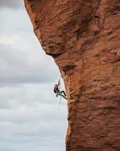

Why Climb
Rock climbing is a physically demanding yet empowering sport. Unlike other sports where competition is key, for the most part the only one you're competing with when you climb is yourself. It's just you and the wall.
Successful climbing requires a full-body commitment. Your arms, legs, and core are all engaged as you pull and push yourself up the rock face. There's also a mental component as you try to figure out the best possible route.
Rock climbing is fun, mentally stimulating, physically strengthening, and a great way to meet new people. And there's no better feeling than making it to the top of the wall.
Climbing Basics
There are two main types of climbing that most beginners start with: bouldering and top rope. Bouldering is done on shorter walls (or literally on boulders) and is done without a rope. Climbs are shorter but often require you to think outside the box and try difficult moves. Top rope routes are often longer and require a rope to be secured at the top of the wall in advance. The climber wears a harness and ties onto the rope, then they are belayed by someone on the ground. The belayer is responsible for pulling the rope tight as the climber ascends, and holding the rope taut if the climber needs to take a break.
Both types of climbing are challenging and rewarding. Both bouldering and top rope routes can be found outside or indoors. Top rope does require more equipment, and top rope routes can be more difficult to find depending on where you live. However, top rope is a little easier to get into as a complete beginner since you can take breaks while you figure out your next move and the rope gives you a sense of security.
Getting Started
So you've decided to give climbing a try. Now what? The best thing to do is to find a local climbing gym. There you can rent your equipment, try out some easy routes, and even take classes to help you get the basics down. One mistake new climbers make is to rely too much on their arms. Most of the power in climbing should come from your legs and core, with your arms guiding you up the wall more than pulling. Taking a climbing class from a qualified instructor can help you learn the right form and give you tips on how to keep yourself safe while climbing.
Once you've gotten a feel for the wall and decided you want more, you can head outside on your own. Use an app like Mountain Project to find outdoor routes near you. Then, you will need to either buy or rent the following equipment:
- Climbing Shoes: Your most important piece of equipment! Climbing shoes are specifically designed to help you get up the wall. They have stiff, pointed toes that help secure your footing.
- Rope: A must if top rope is your preferred sport. Climbing rope should be sturdy enough to hold you to the wall but thin enough that it isn't too heavy to carry to the climbing spot. Outdoor retailers like REI carry a wide variety of ropes and employees who can give you advice on what rope works best for you.
- Harness: Another essential for top rope, harnesses fit around your waist and upper thighs and keep you secured to the rope. Harnesses should be snug but not too tight.
- Belay Device: This small piece of metal is what keeps you safe when you're climbing up a sheer rock face. There are several different types of belay devices, but the best one for a beginner is probably an auto-locking device, which will automatically snap shut if the rope becomes too loose.
- Crash Pad: A must for bouldering but also nice to have for top rope, crash pads protect you when—not if—you fall.
- Helmet: Safety first! Not only do helmets protect your head during a serious fall, but they are nice to have in case you accidentally bonk your head on a protruding rock.
Final Tips
Climbing is a sport where you make a lot of progress very quickly before hitting a plateau. If you conquer the early easy routes with no problem and then find a route you can't crack, don't get discouraged. You might need to do a little bit of strength training, learn new moves, improve your grip strength, or just look at the problem in a new way. With climbing, there's always a new challenge, and the best way to beat it is to keep trying.
Good luck, and happy climbing!